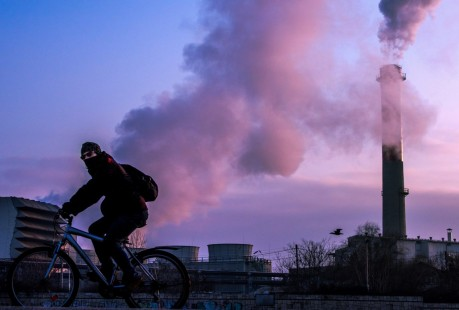
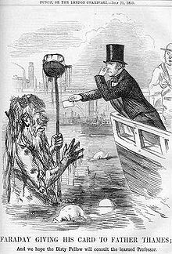
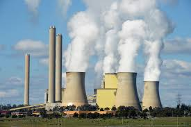

Culturas antiguas: La contaminacion del aire a pequeña escala siempre ha estado entre nosotros. Segun un artículo de 1983 de la revista Science: el hollín
hallado en el techo de cuevas prehistoricas provee amplia evidencia de altos niveles de contaminacion que estaban asociados a una inadecuada ventilacion de
las fogatas
El forjado de metales parece ser el momento de la aparicion de contaminacion del aire fuera del hogar. Según investigaciones realizadas sobre muestras obtenidas
en capas de hielo de los glaciares de Groenlandia, se observan incrementos en la aparicion de metales (contaminacion) asociados a los periodos de produccion de
metales de las civilizaciones griega, romana y china.?Estas observaciones se pueden hacer mediante el analisis de las burbujas de aire contenidas en las capas de
hielo (de arriba hacia abajo cada capa de hielo es un registro histórico del la atmosfera); comparando burbujas atrapadas en el hielo hace miles de años con muestras
de la atmosfera actual, se obtienen las concentraciones para cada periodo. Cuanto mas profundo es obtenida la muestra mas antiguo será el registro de la atmosfera.
Primeros registros: En 1272 Eduardo I de Inglaterra en una proclamacion prohibi la quema de carbón en Londres, cuando la contaminacion atmosferica
en la ciudad se convirtio en un problema.
La contaminación del aire continuó siendo un problema en Inglaterra, especialmente con la llegada de la revolucion industrial. Londres tambien registro uno de los
casos mas extremos de contaminacion del agua con aguas residuales durante el Gran Hedor del Rio Tamesis en 1858, esto dio lugar que poco despues a la construccion del
sistema de alcantarillado de Londres. Fue la revolucion industrial la que inicio la contaminacion como un problema medioambiental. La aparicion de grandes fabricas y
el consumo de inmensas cantidades de carbon y otros combustibles fosiles aumentaron la contaminacion del aire ocasionando un gran volumen de vertidos de producto
quimicos industriales al ambiente, a los que hay que sumar el aumento de residuos humanos no tratados.
En 1881 Chicago y Cincinnati fueron las dos primeras ciudades estadounidenses en promulgar leyes para garantizar el aire limpio. Otras ciudades estadounidenses
siguieron el ejemplo durante principios del siglo XX, cuando se creó un pequeño Departamento de Contaminacion del Aire, dependiente del Departamento del Interior.
Los Angeles y Donora (Pensilvania) experimentaron grandes cantidades de esmog durante la decada del 1940.
Contaminacion local: La contaminación se convirtió en un asunto de gran importancia tras la Segunda Guerra Mundial, después de que se hiciesen evidentes las
repercusiones de la lluvia radiactiva ocasionada por las guerras y ensayos nucleares. En 1952 ocurriria un evento catastrofico de tipo local, conocido como la Gran
Niebla de 1952 en Londres, que mató a unas 4 000 personas.? Este trágico evento motivo la creacion de una de las mas importantes leyes modernas sobre el medio
ambiente: la Ley del Aire Limpio de 1956.
En los Estados Unidos la contaminacion comenzo a recibir la atencion publica a mediados de la decada de 1950 y a principios de los años 1970, fechas que coinciden
con la creacion y aprobacion de la Ley del Aire Limpio,? la Ley del Agua Limpia, la Ley de Politica Ambiental de los Estados Unidos y la Ley del Ruido. Algunos
sucesos han ayudado a concienciar a la gente sobre los efectos negativos de la contaminacion en los Estados Unidos. Entre estos se encuentra el vertido de bifenilos
policlorados (PCB) en el río Hudson por parte de la compañia General Electric, dando como resultado el establecimiento de una serie de prohibiciones emitidas en 1974
por la EPA, como la pesca en sus aguas. Otro suceso es el desastre ecologico en el barrio de Love Canal en Niagara Falls. El conjunto residencial de Love Canal fue
construido sobre un terreno en el cual la empresa Hooker Chemical and Plastics Corporation habia enterrado en 1947 residuos quimicos y dioxinas. Asi, en 1978 los
habitantes de Love Canal tuvieron que abandonar sus viviendas al descubrirse filtraciones de agua en la superficie con materiales cancerígenos disueltos,
convirtiendose asi en una noticia a nivel nacional, y promoviendo la creacion en 1980 de la Ley de Superfondo (en ingles «Superfund»), donde se incluye una lista
de los agentes contaminantes mas peligrosos.
Algunos de los procedimientos penales de la decada de los noventa ayudaron a revelar emisiones de cromo hexavalente en California, una sustancia quimica que aumenta
el riesgo de cancer bronquial, esofagitis, gastritis, entre otros padecimientos. La contaminacion de los suelos industriales ayudo a la creacion del termino zona
industrial abandonada, para identificar durante la planificacion urbana los sitios que han sido contaminados y que su terreno no puede ser usado para ningun
proposito. Despues de la publicacion del libro Primavera silenciosa de Rachel Carson, el DDT fue prohibido en la mayor parte de países desarrollados.
Con el desarrollo de la ciencia nuclear aparecio la contaminacion radioactiva, la cual puede permanecer en el ambiente de manera letalmente radioactiva por millones
de años.? Los paises dedicados a la experimentacion y fabricacion de armas nucleares producen desechos militares radioactivos, y en varios casos, el no haberlos
depositado en lugares seguros ha causado desastres ecologicos. En las decadas de 1950 y 1960, cuando aun existia la Union Sovietica, los desechos radioactivos
producidos por la instalación nuclear Mayak fueron arrojados en el lago Karachai y en el río Techa, ocasionando casos de leucemia en la poblacion y afectando
directamente a la provincia de Cheliabinsk. De acuerdo con el Worldwatch Institute, el lago Karachai era el sitio «mas contaminado de la Tierra».
En la Guerra Fria se realizaron ensayos con armas nucleares, algunas veces cerca de zonas habitadas y con mayor frecuencia durante las primeras etapas de
investigacion y desarrollo armamentistico. El impacto negativo que ha tenido la contaminacion nuclear sobre las poblaciones, y el progresivo entendimiento de los
efectos de la radiactividad en la salud humana, son también algunas de las dificultades que complican el uso de la energia nuclear.[cita requerida] La posibilidad
de que ocurra una catástrofe como en los accidentes de Three Mile Island y Chernobil hace desconfiar al publico.[cita requerida] Uno de los legados de las
detonaciones y ensayos nucleares, antes de que se instaurasen la mayoria de Tratado de Prohibicion Completa de los Ensayos Nucleares prohibiciones y tratados
nucleares, fue el considerable incremento de los niveles de radiactividad.
Contaminacion global: Catastrofes internacionales como el hundimiento en 1978 del petrolero Amoco Cadiz en las costas de Bretaña y el Desastre de Bhopal ocurrido en
1984 han demostrado la universalidad de dichos eventos y la magnitud de ayuda requerida para remediarlos.
La naturaleza sin fronteras de la atmósfera y los océanos ha dado como resultado que el problema de la contaminación sea considerado a nivel mundial, especialmente
cuando se trata el asunto del calentamiento global. Recientemente ha sido utilizado el término contaminante orgánico persistente para describir un grupo de
sustancias químicas entre los que se encuentran: los PBDE, los PFC, etc. Debido a la falta de experimentación sus efectos se desconocen en profundidad, no obstante,
han sido detectados en varios hábitats ecológicos aislados de los centros de actividad industrial como el ártico, demostrando así su difusión y bioacumulación a
pesar de haber sido usados de manera extensa por un breve periodo de tiempo.
La creciente evidencia de contaminación local y global, junto con un público cada vez más informado, han impulsado el desarrollo del movimiento ecologista, el cual
tiene como propósito proteger el medio ambiente y disminuir el impacto de los humanos en la naturaleza.
Ahora hay gente que no hace lo que los medios dicen que hay que hacer para evitar la contaminación porque opinan que lo que dicen los medios es demasiado.

Clasificación según el tipo de contaminación
La contaminación puede afectar a distintos medios o ser de diferentes características. La siguiente es una lista con los diferentes tipos de contaminación,
sus efectos y sus contaminantes más relevantes:
Contaminación atmosférica o ambiental:Consiste en la liberación de sustancias químicas a la atmósfera que alteran su composición. Supone
un grave riesgo para la salud de todos los seres vivos.
Contaminación hídrica o del agua:Se debe a la presencia de desechos en el agua. La contaminación de mares, ríos y lagos se produce por las
actividades del ser humano y es foco de infecciones.
Contaminación del suelo:Como los dos anteriores tipos de contaminación, se debe a la acción humana: a los residuos y la basura arrojada en cualquier
superficie terrestre.
Contaminación química:Cuando el contaminante es una sustancia química que procede normalmente de los usos industriales.
Contaminación radiactiva:Se deriva de la emisión de materiales radiactivos producto de accidentes en centrales nucleares o abandono deliberado de
residuos radiactivos. El uranio enriquecido es el principal contaminante.
Contaminación térmica:Surge con la emisión de fluidos a elevadas temperaturas. Y es una de las causas del cambio climático.
Contaminación acústica:La actividad humana produce mucho ruido, y los altos decibelios en un determinado lugar por encima de sus niveles naturales
marcan la contaminación.
Contaminación visual:Aquella que destruye de forma visual un paisaje natural, como las torres de energía eléctrica, vallas publicitarias,
vertederos…
Contaminación lumínica:Se produce sobre todo por la noche en las ciudades y se debe a un exceso de iluminación artificial.
Contaminación electromagnética:Las radiaciones generadas por equipos electrónicos son las causantes de este tipo de contaminación.
Contaminación microbiológica:Se da sobre todo en aguas servidas, subterráneas y terrestres. Muy perjudiciales para los animales y el ser humano.
Contaminación genética:Afecta ante todo a las plantas cuando se produce una transferencia incontrolada de material genético en ellas. Perjudica de
manera muy grave a la biodiversidad.
Contaminación según la extensión de la fuente
Los tipos de contaminación anteriores, además, pueden ser evaluados según la fuente de la que proceden:
Contaminación puntual: Aquella que presenta en un punto contaminante identificable y único.
Contaminación linealLa que se produce a lo largo de una línea, como la acústica o la química.
Contaminación difusa:No tiene un punto de origen determinado. El contaminante se ha distribuido por una zona y se desplaza por la tierra, el agua
o el aire y no permanece en un solo lugar.